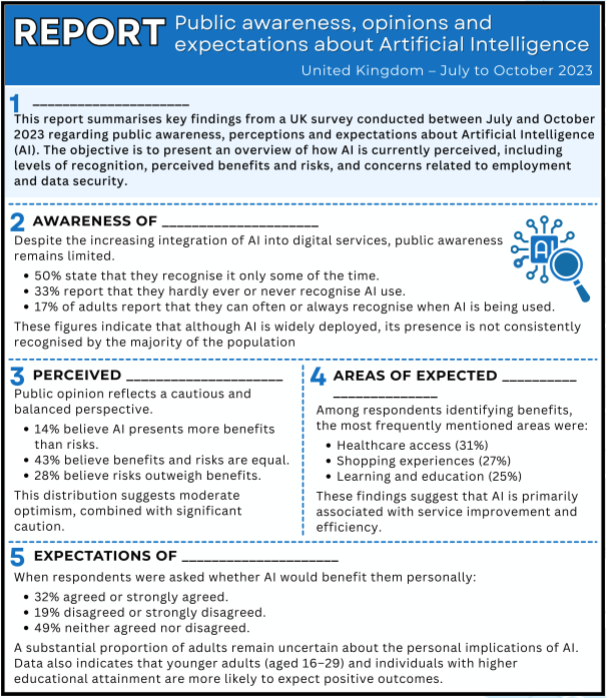
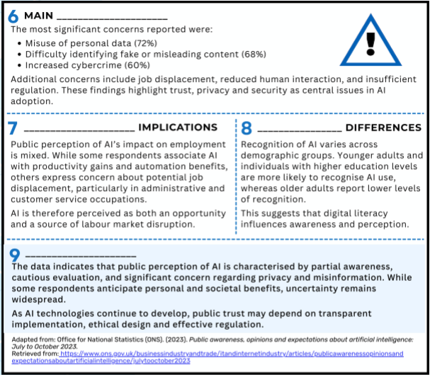

This report summarises key findings survey on the use of ai from polo educativo tecnologico of vista linda, on 24th of september perceptions and expectations about ai. next the results.
On question 1: comfort by having things completely done by ai 51.6% say they are comfortable with things which are completely done by ai and the rest (48.4%) say they are not comfortable with things completely done by ai.
On question 2: trust in ai as a driver The majority (41.9%) opinion is it depends on the vehicle. 32.3% say they trust an ai driver and the 25.8% say they don't trust an ai driver.
On question 3: trust in ai dealing personal data 41% don't trust giving their personal data to ai. 16.1% think in some occasions agree with giving their personal data. 12.9% trust totally to give their personal data.
On question 4: trust in ai doing jobs which require critical thinking 48.4% say they trust ai doing critical thinking jobs only for some things, another 48.4% say they don't trust ai at all, and 3.2% say they trust ai totally.
On question 5: having regulations for students using ai they approve of 48.4% say they approve of to regulations for students using ai, 45.2% say yes but not too strict, and 6.5% say no to regulations. They approve
On question 6: use of ai for doing homework 48.4% say they use ai for homework in some occasions, 45.2% say yes of course they use ai, and 6.5% say they don't use ai at all for homework.
On question 7: the importance of checking the information given by ai The majority (93.5%) say it is important to check the information given by ai and only 6.5% say it is not important.
On question 8: capability of doing things with the use of ai 45.2% say maybe ai helps their capability of doing things, 32.3% say no, and 22.6% say yes.
In conclusion: The data indicates that students and teachers perception of ai is characterized by frequent use in education, combined with the giving personal data to ai and a little dependence for to do homework and others things.